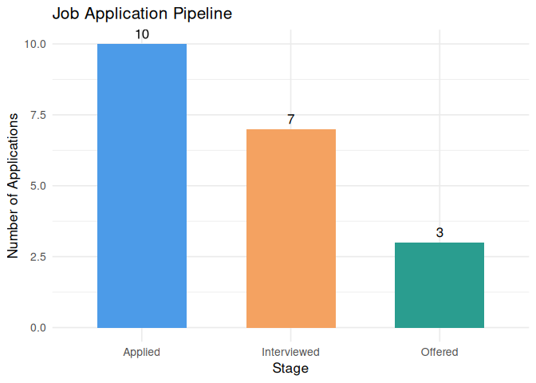

The Problem With Job Hunting
It is the spring semester of your senior year. You have been applying to jobs for weeks — some on LinkedIn, some through referrals, some on Indeed. Your spreadsheet is a mess. You cannot remember which companies responded, which ones ghosted you, or whether that offer from Austin is actually better than the one from San Francisco once you factor in the cost of living.
This is exactly the problem jobtrackr was built to solve.
jobtrackr is a small R package that helps you track, organize, and analyze your job applications. It will not find you a job — but it will help you think clearly about the ones you have already applied for.
Installation
You can install the development version of jobtrackr from GitHub with:
# install.packages("pak")
pak::pak("ADC-405-S26/jobtrackeR")Getting Started
First, load the package and the built-in example dataset. The jobs dataset contains 30 simulated job applications across different companies, locations, and statuses — a realistic snapshot of what a semester of job hunting looks like.
Let us take a quick look at what the data contains:
head(jobs)
#> company position location cost_of_living status
#> 1 Google Data Analyst New York NY 100 Interviewed
#> 2 Amazon HR Coordinator Austin TX 82 Rejected
#> 3 Deloitte Business Analyst Chicago IL 88 Applied
#> 4 Microsoft Data Scientist Seattle WA 91 Offered
#> 5 Apple Jr. Statistician San Francisco CA 110 Rejected
#> 6 IBM Data Engineer Austin TX 82 Interviewed
#> date_applied salary source
#> 1 2024-01-10 95000 LinkedIn
#> 2 2024-01-15 85000 Referral
#> 3 2024-01-20 78000 Indeed
#> 4 2024-02-01 110000 LinkedIn
#> 5 2024-02-05 88000 Career Fair
#> 6 2024-02-10 82000 IndeedEach row is one application. The columns tell us the company, position, location, cost of living index for that city, current status, date applied, estimated salary, and where the listing was found.
Step 1: Where Do Things Stand?
The first thing any job seeker wants to know is simple: out of everything I applied to, what actually happened?
application_summary() answers that question in one line.
application_summary(jobs)
#> Response rate (non-Applied): 66.7%
#> status count percent
#> 1 Applied 10 33.3
#> 2 Rejected 10 33.3
#> 3 Interviewed 7 23.3
#> 4 Offered 3 10.0Step 2: Who Has Not Responded Yet?
Waiting is the hardest part of job hunting. But there is a difference between patiently waiting and being ghosted. days_since_applied() calculates how many days have passed since each application was submitted, and flags any that have gone more than 21 days with no response.
result <- days_since_applied(jobs, flag_after = 21)
result[result$possibly_ghosted == TRUE,
c("company", "position", "date_applied", "days_waiting")]
#> company position date_applied days_waiting
#> 3 Deloitte Business Analyst 2024-01-20 858
#> 7 Meta Product Analyst 2024-02-15 832
#> 10 Salesforce BI Analyst 2024-03-05 813
#> 13 Target Supply Chain Analyst 2024-03-12 806
#> 17 PWC Audit Associate 2024-03-22 796
#> 19 Boeing Data Analyst 2024-03-28 790
#> 22 KPMG Advisory Analyst 2024-04-05 782
#> 25 Spotify Data Analyst 2024-04-12 775
#> 27 LinkedIn Recruiter 2024-04-17 770
#> 30 Zoom Customer Success 2024-04-25 762Step 3: Comparing Real Offers
You have received a few offers — congratulations! But a higher salary does not always mean a better deal. A $95,000 salary in New York City buys you far less than $85,000 in Austin, Texas.
compare_offers() adjusts each offer by the cost of living index of its city, so you can compare apples to apples.
compare_offers(jobs)
#> company position location cost_of_living status
#> 1 Microsoft Data Scientist Seattle WA 91 Offered
#> 2 Accenture Management Consultant Chicago IL 88 Offered
#> 3 Nike HR Analyst Portland OR 85 Offered
#> date_applied salary source adjusted_salary
#> 1 2024-02-01 110000 LinkedIn 120879
#> 2 2024-03-20 95000 Referral 107955
#> 3 2024-03-01 75000 Career Fair 88235Step 4: Seeing the Full Picture
Finally, pipeline_stage() gives you a visual summary of your entire job search funnel — how many applications made it to each stage.
pipeline_stage(jobs)